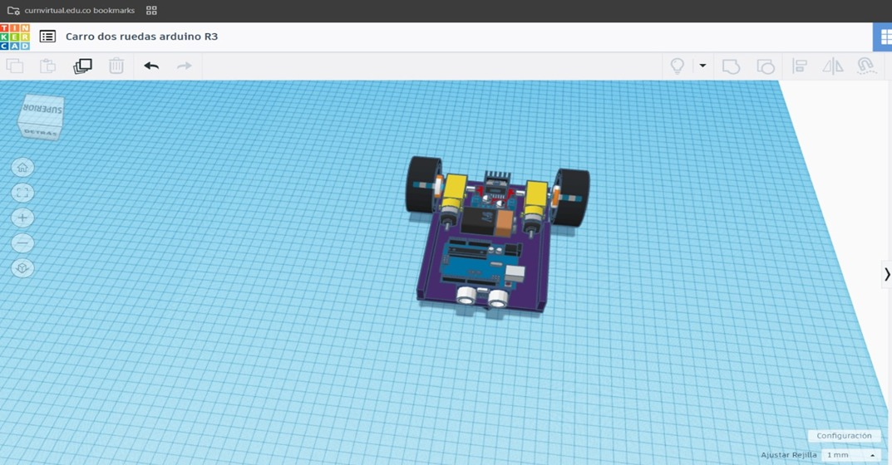
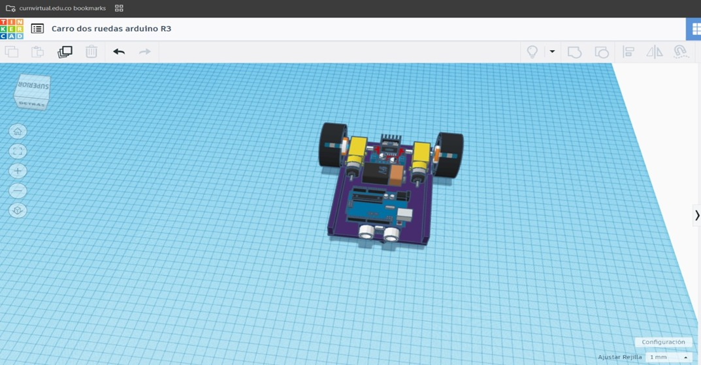

Chasis de carro
Desarrollar un vehículo autónomo a pequeña escala utilizando Arduino como plataforma principal, incorporando sensores inalámbricos y componentes electrónicos básicos, con el fin de comprender los principios fundamentales de la robótica móvil y la automatización.
Vehículos Autónomos
Un vehículo autónomo es capaz de operar sin intervención humana utilizando diversas tecnologías. Los aspectos clave incluyen:
Sensores: Cámaras, radares, lidars y sensores ultrasónicos para percibir el entorno.
Sistemas de navegación: Combinan GPS, sistemas inerciales y mapas preconfigurados.
Inteligencia artificial: Modelos de aprendizaje automático para interpretar datos y tomar decisiones.
Actuadores: Controlan la dirección, aceleración y frenado basándose en las decisiones del sistema.
Arduino
Arduino es una plataforma de hardware y software libre, ideal para prototipos electrónicos.
Características principales:
Fácil de usar para principiantes y flexible para usuarios avanzados.
Amplia variedad de placas (Arduino Uno, Nano, Mega, etc.).
Compatibilidad con sensores y actuadores.
Uso en robótica: Control de motores, integración de sensores y creación de algoritmos para tareas autónomas.
Sensores
Los sensores son dispositivos que convierten señales físicas o químicas en información procesable. Algunos comunes en robótica:
Sensores de proximidad: Detección de objetos cercanos (ultrasónicos, infrarrojos).
Sensores de posición: Codificadores para medir movimientos angulares o lineales
Sensores ambientales: Miden temperatura, presión, humedad, etc.
Cámaras: Usadas para visión por computadora.
IMU (Unidad de Medida Inercial): Integra acelerómetros y giróscopos para estimar orientación y movimiento.
Componentes Electrónicos
Los sistemas robóticos incluyen diversos componentes esenciales:
Microcontroladores: Como Arduino o Raspberry Pi, que controlan el sistema.
Motores: Motores DC, servomotores o motores paso a paso para movimiento.
Fuentes de energía: Baterías recargables, reguladores de voltaje.
Actuadores: Elementos como brazos mecánicos, ruedas, etc.
Cables y conectores: Para transmitir señales y energía entre componentes.
Principios Básicos de Robótica Móvil
Cinemática y dinámica: Estudio del movimiento de robots.
Ejemplo: Diferencia entre robots con ruedas omnidireccionales y diferenciales.
Planificación de rutas: Algoritmos como A* o Dijkstra para navegación.>
Controladores: PIDs para ajustar movimientos basados en retroalimentación de sensores.
Integración de sistemas: Combinar hardware y software para coordinar sensores, actuadores y controladores.
 
